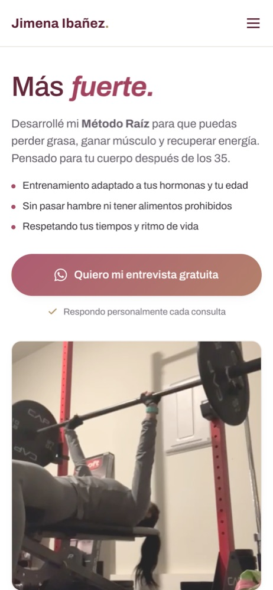

Entrená con Jime · 2026 · Live
A website that brings in clients and sheets that organize the work
Jimena is a Physical Education teacher and strength coach specialized in female body recomposition. I built her online presence and the tools she uses with every client.

In 30 seconds
- Problem
- A coach with her own method, no online presence, building every plan by hand.
- Who it is for
- Adult women with little time who already tried methods that did not work for them.
- What it solves
- A website that ends in a WhatsApp interview, and tools that organize the work with each client.
- Status
- Live on its own domain, with visit tracking since August 2026.
What you can do
Website
- Method, plans and a "How I work" section with a sticky panel that changes on scroll
- Direct contact over WhatsApp
- Testimonials published only with each client’s consent
- Tracking of clicks to WhatsApp and Instagram
Tools
- Intake form with goals, history and initial body measurements
- Six-week mesocycle planner with RPE-based autoregulation and suggested loads
- Calorie and macronutrient calculator by goal
How it is built
- WebsiteA single self-contained HTML file, no dependencies or build
- HostingGitHub Pages with its own domain on Cloudflare
- ToolsExcel sheets generated by scripts versioned in the repo
- AnalyticsGoogle Analytics 4
- ProcessShared repo with Jimena; every decision documented with its research
How I thought it through
Direct contact over WhatsApp
The whole site leads to a free interview over WhatsApp, and Jimena answers every inquiry personally.
A single self-contained file
The website is a single HTML file, with no dependencies or build step.
The tools
- An intake form for every new client: every program starts from a real assessment, not a template.
- A mesocycle planner, with block periodization and perceived effort.
- A calorie and macronutrient calculator, with no aggressive deficits.